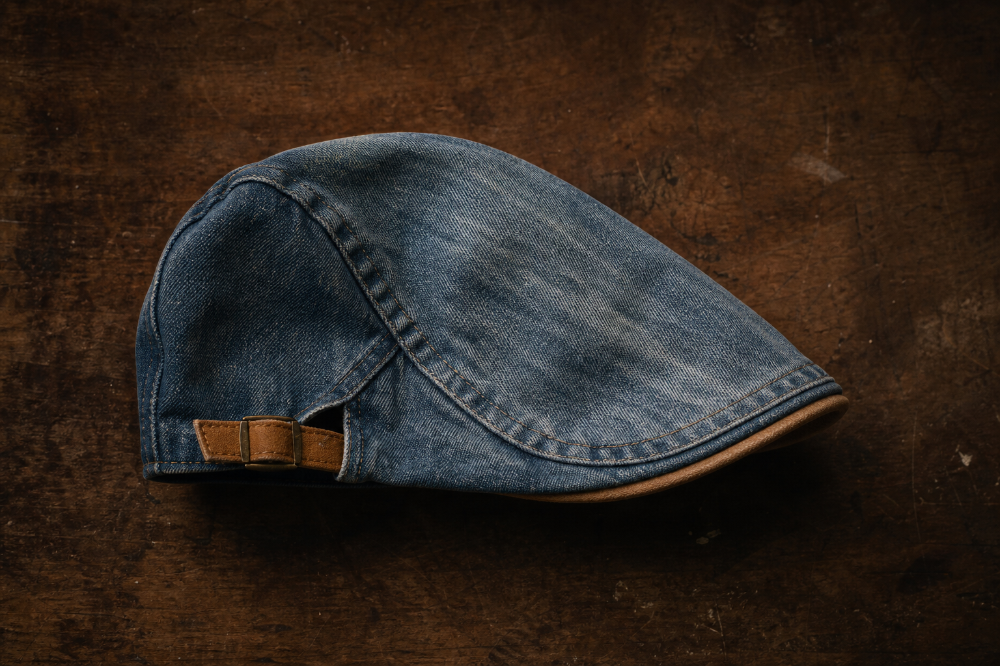
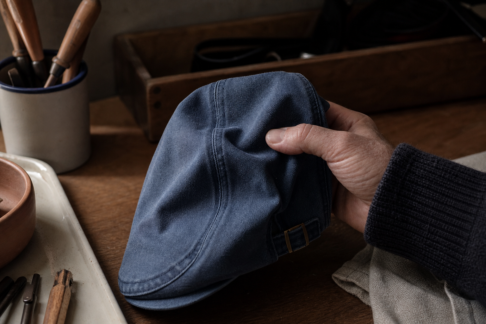
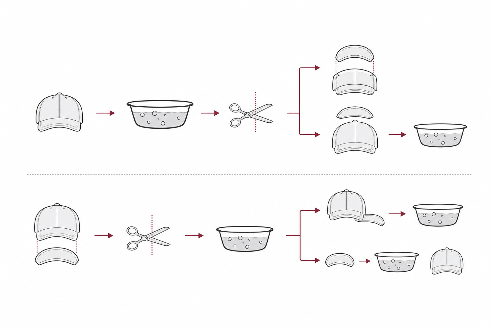
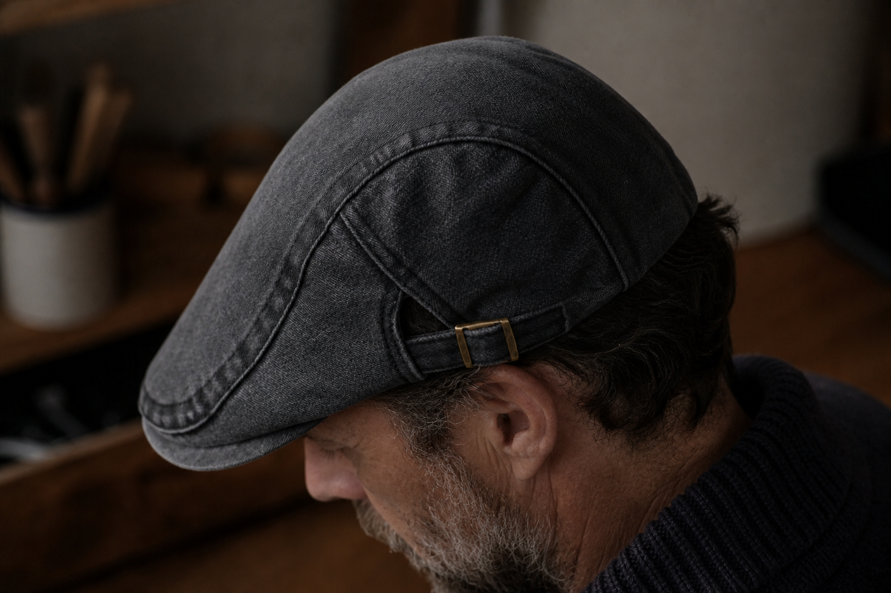
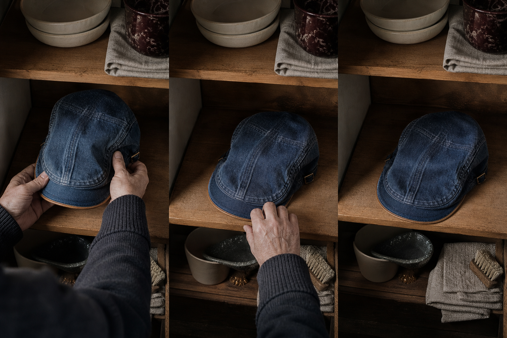
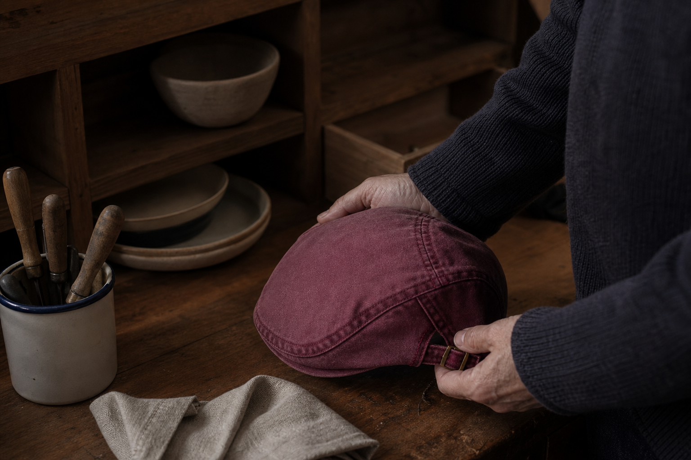

One cut
No size to choose, no chart to misread. Impossible to get the size wrong.
Ashcroft & Co — The Washed Denim Collection
One bled on your forehead. One lost its shape. One scratched at the seam. Same twelve months, three bin bags. Free shipping in France, and thirty days to send it back.
You said it yourself, and we'd rather quote you than argue with you: "they all look fine in the photo." They did. That's the part worth examining.
So count first. Three receipts, twelve months, nothing kept. Nobody replaces a cap three times a year by accident, and no product photo on this page will fix that on its own.
We're not asking you to believe a picture. We're asking you to look at one detail nobody checks before buying — further down — and then decide. With the 100-Day Fit Guarantee, the count costs you nothing to start.
It sits right, or your money back. Free worldwide shipping, no minimum.

Three sentences, three failures
Not the price, not the size. The three reasons the last ones went in the bin.
You said them before you got here. So let's take them in order, one at a time, and stop where the honest answer stops.
The cheap cap answers all three the same way: it doesn't. It bleeds because the dye was never taken out of it, it sags because the cloth was cut before it was ever washed, it scratches where the seam meets your head. That comparison is the whole argument, and it isn't settled by a photo. It's settled by 100 days on your own head: it sits right, or your money back.
The denim is washed in the piece, before the cut. The excess dye leaves in the industrial wash, not on your skin.
The shrinkage is already spent. Cloth washed before it's cut has nothing left to give up, so the crown keeps the shape it was cut in.
Nineteen percent of men who binned a cap did it because it scratched or gripped. Here the cut sits low and the side-adjuster is set once, so nothing is forced against the friction points.
Refusal number four
29% of buyers say the same. It's the second most common reason men don't order online, behind size at 57%.
You're right. A photo tells you nothing about the hand of the cloth. The three caps you binned all photographed well.
So I won't ask you to judge from the screen. The count only starts when the cap is on your head: 100 days to feel the weight, the seam, the way it sits. If the hand isn't right, your money comes back.
The screen is where cheap caps win. Your hands are where they lose.
It isn't. Which is why the judgement is deferred to your hands and backed by the 100-Day Fit Guarantee: it sits right, or your money back.
Free worldwide shipping on all orders, no minimum. The trial costs you nothing to start.

The detail nobody checks
Your caps didn't wear out. They shrank on your head, because they were cut before they were ever washed.
You said it yourself: "it fitted in the shop, and never again after the first wash."
Read that back slowly. The cloth was cut first and washed later. So the shrinking had nowhere to happen except on your head. That is not three caps wearing out. That is one order of operations, repeated three times.
Here it runs the other way. The denim is washed in the piece, before the cut. The shrinkage is already spent by the time anyone takes scissors to it, and the hand of the cloth is soft from the first wear, not after a year of breaking in.
Nothing to break in. Nothing left to shrink. And 100 days to check the count yourself before you owe us anything.
100 days to prove the fourth bin bag never happens

Month one to month three
The cap you binned lost its shape. This one changes shape on purpose, in the places your hands already know.
"So it will still look worn out in three months." Worn in, not worn out, and there is a difference you can count on your fingers.
The cheap three faded where the dye gave up: the sweatband, your forehead, all at once. Washed denim goes the other way. It marks at the folds of the crown, lightens at the friction points, at the edge of the peak where your thumb sits every time you take it off. Three months in, one man wrote back: "Trois mois, plusieurs lavages, elle a pris une patine sans se deformer."
A patina is not damage. It is the record of every time you reached for it instead of replacing it.
The size question
"I've had the right size on paper and the wrong cap on my head."
You said it before you said anything else: 57 out of every 100 buyers stall on the same question, and you were one of them. Three caps, three size charts, three wrong answers.
There is no chart here. One cut, made to fit. The side-adjuster is set once and it stays put, which is the whole difference: the usual cap asks your head to match a number, this one moves to your head and stops moving. It sits low and follows your face rather than perching on top of it.
One honest limit, because the count only works if it's true: above 61 cm, write to us at help@ashcroft-flatcaps.com before you order. We'd rather tell you now than send you a fourth cap you bin.
No size to choose, no chart to misread. Impossible to get the size wrong.
The side-adjuster holds where you left it. You adjust it the first day and never again.
Email us first. That measurement is the one place we won't promise you a fit.

Between two wears
No. Four rules, cold water, and the count keeps running.
You asked. Here it is, in full, because a cap you keep is a cap you look after, and the ones you binned never gave you that option.
That is four rules against three caps a year. The cheap ones asked nothing of you because there was nothing to preserve; you replaced them instead. This one you mend your habit around, and 100 days say it costs you nothing to find out.
100-Day Fit Guarantee: it sits right, or your money back

Nine washes, one cut
"So which one do I take?" The count is small on purpose.
Everything else on this page has been counted for you. This is the one number you choose yourself.
Nine washes, all sharing the same cut and the same tan suede trim. The Ashcroft, The Mariner, The Blackthorn, The Cotswold, The Chestnut, The Claret, The Sherwood, The Admiral, The Onyx. From an everyday light blue to a burgundy that isn't afraid of colour.
The collection keeps growing, with new washes added. Pick the wash that feels like you, not the one that photographs best.
Nine to compare, one cut behind all of them

Before you count us in
Two limits we would rather write down than argue about later
"So it does everything, then." No. It is not a sports cap. It does not cover the forehead the way a long-peaked cap does, and it will not hold on a moving bike. If what you want is a technical hat, this is the wrong product, and knowing that now saves you a return.
"And my head is big." Then measure it. Above 61 cm, write to us at help@ashcroft-flatcaps.com before you order rather than after. One cut, one side-adjuster, and one honest edge to it.
Everything else, the 100 days settle. It sits right, or your money back.
No. No long peak over the forehead, no grip on a moving bike. A cap for the walk, not the ride.
Write to us first at help@ashcroft-flatcaps.com. We would rather tell you before the order than process a second return.
That is what the 100-Day Fit Guarantee is for: it sits right, or your money back.
From the number to the case
30,000+ satisfied customers is a number. Here are two of them, word for word.
You said you'd believe it when someone had worn one long enough for the cloth to answer. So count with these two: one man at three months and several washes, one man through an entire dinner.
Neither of them is describing a replacement. They're describing a cap they kept.
And the count starts at no cost to you: the 100-Day Fit Guarantee runs longer than the three months in that first review. It sits right, or your money back.
Trois mois, plusieurs lavages, elle a pris une patine sans se deformer.
Verified customer review, February 2026 (illustrative)
Je l ai portee tout un diner sans que personne me demande pourquoi je gardais ma casquette. C est la premiere fois.
Verified customer review, January 2026 (illustrative)
The arithmetic
"It's a lot for a cap." Compared to what, exactly?
You said it earlier: three caps, twelve months, and nothing left to show for it. That's the number to divide by. Not the one on this receipt.
The caps you binned were cheap the day you bought them and expensive the day you replaced them. This one is $29.99 instead of $59.98, free worldwide shipping, no minimum. Buy two, the third is free.
Run your own count over 100 days. It sits right, or your money back.
The count, at our expense
It sits right, or your money back.
"I've been wrong three times. I'm not paying to be wrong a fourth."
You won't. The three you binned cost you the full price the day the dye ran, the shape went, the seam scratched. This one is counted differently: wear it 100 days, and if it doesn't sit right, you get your money back. The count runs at our expense, not yours.
That's the whole reason to start now rather than after the fourth cap. Nothing to weigh up, nothing to risk.
100-day money-back guarantee. Free worldwide shipping.
Before the fourth one
Asked in your words. Answered in ours.
Six questions came back more than any others. Here they are, unedited.
It's the long peak and the stiff cloth that read old, not the shape. Short peak, soft crown, washed denim: look at a profile shot before you judge it.
Cotton denim breathes. The sports cap you'd wear instead is lined in polyester, and that one is warmer.
The excess dye left in the industrial wash, before the cut. Not on your skin.
Wear it outside, not in front of a mirror. The 100-Day Fit Guarantee runs the whole time: it sits right, or your money back.
Then write to help@ashcroft-flatcaps.com before you order. We'd rather say so now than count a second return.
100 days, money back, free worldwide shipping with no minimum. The count costs you nothing to start.
Where the count ends
Three caps went in the bin because they were cut before they were washed. That fault isn't yours to keep paying for.
You said you'd stop buying caps. What you meant is that you'd stop buying replacements. That's a different thing, and it's the one worth mending.
So don't decide today. Wear it. Wash it by hand in cold water, dry it flat, put it back on. If after 100 days it doesn't sit right, you get your money back, and the fourth bin bag never happens.
Nine washes, one cut, $29.99 instead of $59.98. Buy 2, get 1 free. Free worldwide shipping, no minimum.
100-Day Fit Guarantee: it sits right, or your money back